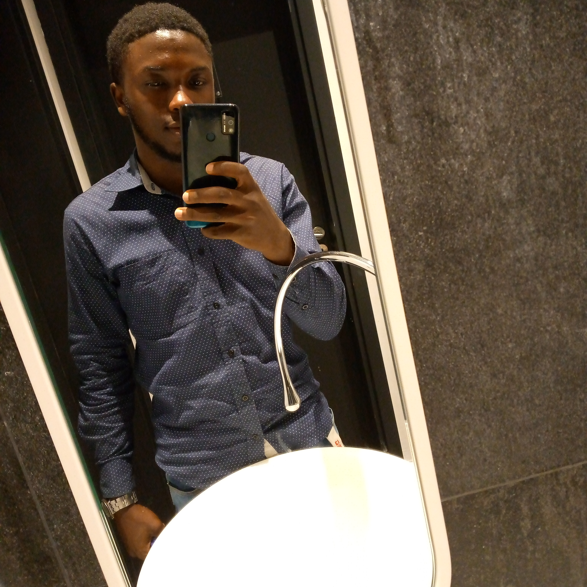

CURRICULUM VITAE
My name is EFUENGHO CARLSON CHAFAC but most of my friends call me "cassio".
1)Academic Career:
-F.N.P.S from the year 2004 to 2010.
-Jesus and Mary College Simboc from the year 2010 to 2015 where i got my G.C.E Ordinary level with 11 papers.
-Saint Benedict College Mvolyé from 2015 to 2017 where i got my G.C.E Advanced Level with 4 papers out of 5.
-ASCONA LANGUAGE CENTRE from 2019 to 2020 where i obtained a Doctorate in Italian Language "C2".
-Presently studying at Seven Advanced Academy to be a full stacks web developer.
2)Hobbies:
-Basketball, Video Gaming, Programming, Swimming, Feasting, Photography, Mode.
3)Spoken Languages and writen languages:
-ENGLISH.
-FRENCH.
-ITALIAN.
-GERMAN.
4)Professional Career:
I'm an active basketball player from "Pépiniere Basketball club Yaoundé" as point guard commonly called in french "méneur de jeu". I started playing basketball in Form 2 when i was in Jesus and Marry College where i played my first FENASCO games as a cadet player and we won our first ever trophy. That was just the begining of a long series of trophies and individual acocomplishments.
-Regional champions of FENASCO games 2 times.
-National Champion of FENASCO games 1 time.
-Finals MVP of Junior NBA of the 2014 season held at Douala with Los Angeles Clippers.
-National champion of Elite 1 league with ALPH basketball club Yaoundé.
-MVP of regular season of the 2017 Elite 2 national championship and MVP of the finals the same year.
-2 times selections for Cameroon Junior basketball team
-2 selections for BWB "Basketball without Borders" in Senegal and South Africa.
